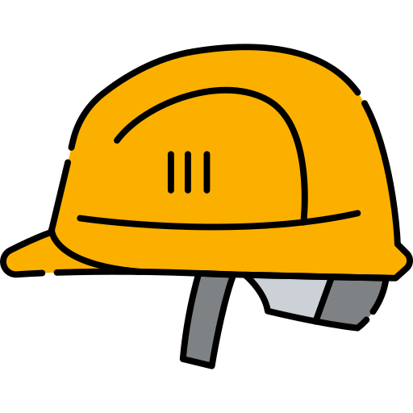
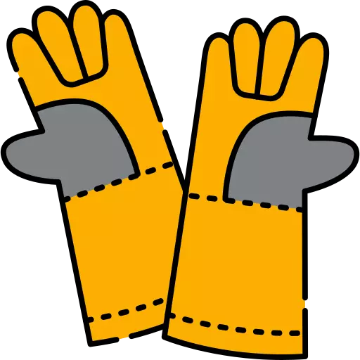
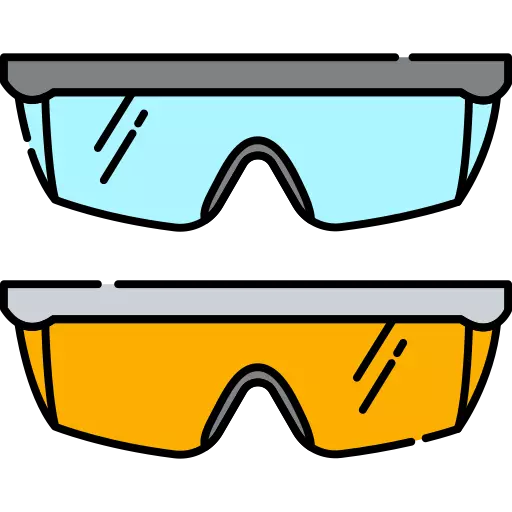
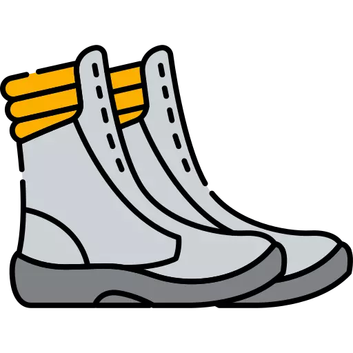
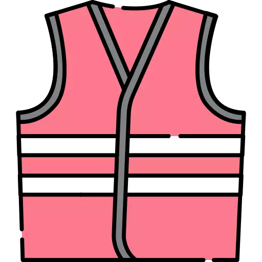
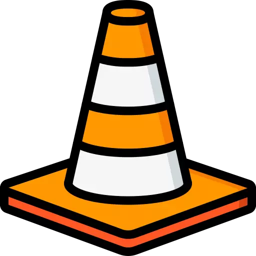

Capacete
Proteção para cabeça contra impactos.

Luvas
Proteção para mãos contra riscos diversos, como químicos e mecânicos.

Oculos de Proteção
Proteção para os olhos contra impactos, radiações, produtos químicos.

Botas
Proteção para pés contra impactos, quedas, cortes e umidade.

Colete
Proteger o corpo do trabalhador contra diversos tipos de risco.

Cones
O cone de sinalização comumente usado para segurança, delimitação de espaços em obras ou estacionamento.
Fita
As fitas ajudam a prevenir quedas e evitar os desagradáveis escorregões
Máscara
Qual a finalidade do uso da máscara? As máscaras funcionam como uma barreira física para a liberação dessas gotículas no ar quando há tosse, espirros e até mesmo durante conversas.